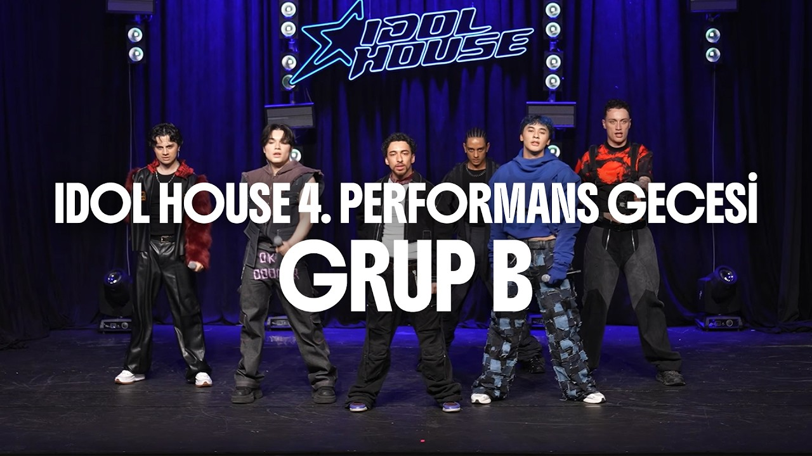
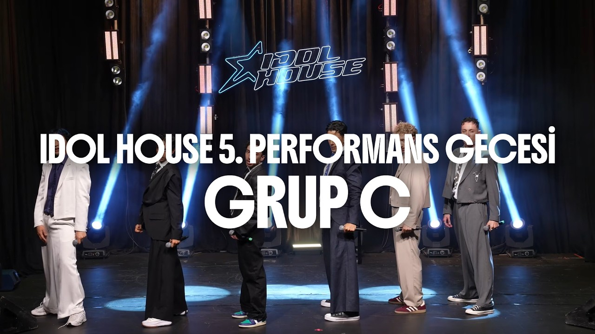
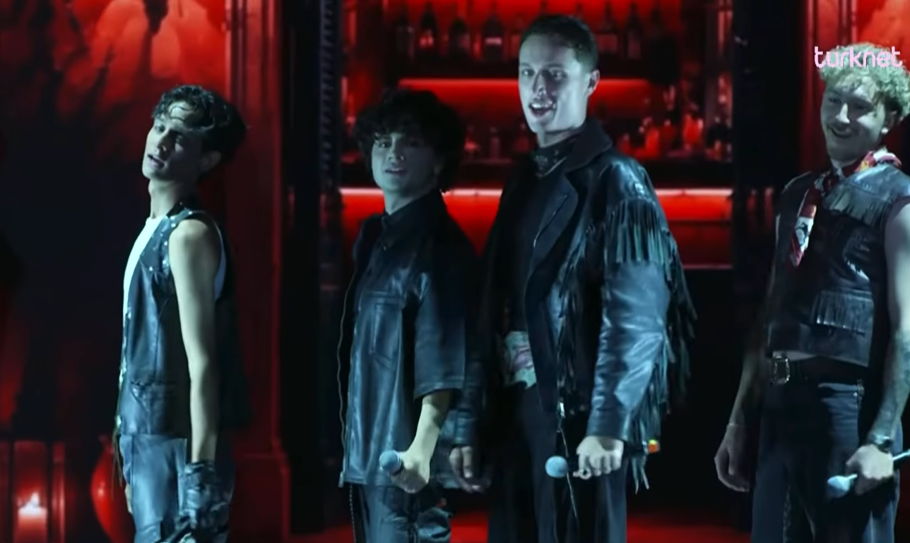
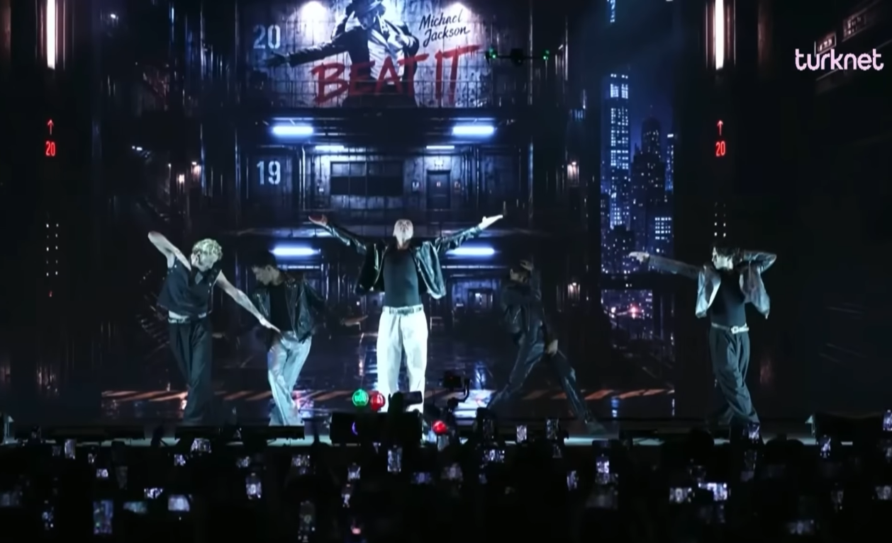
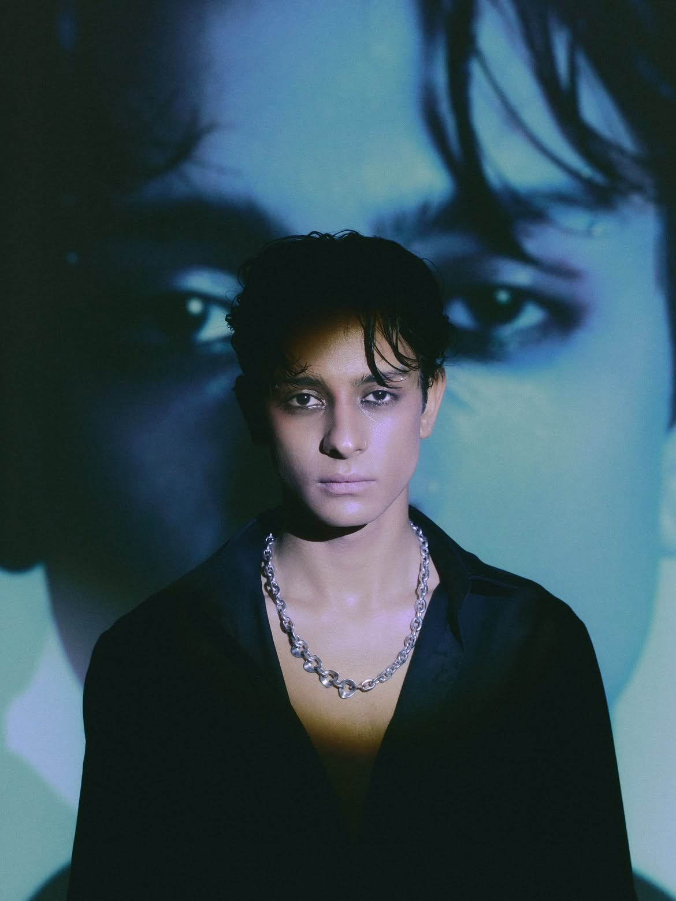
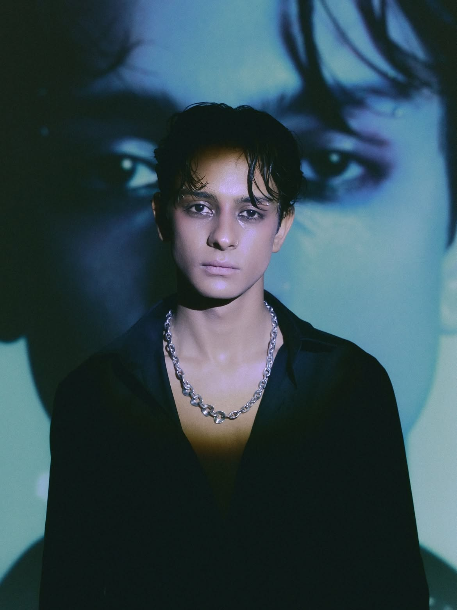
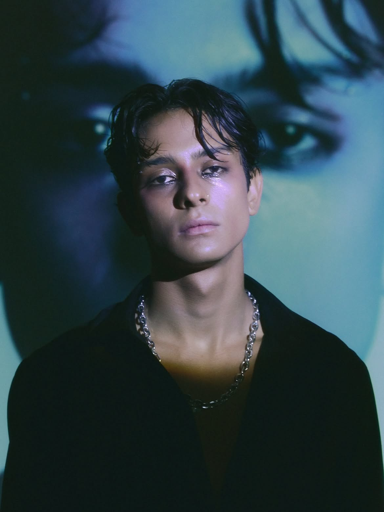
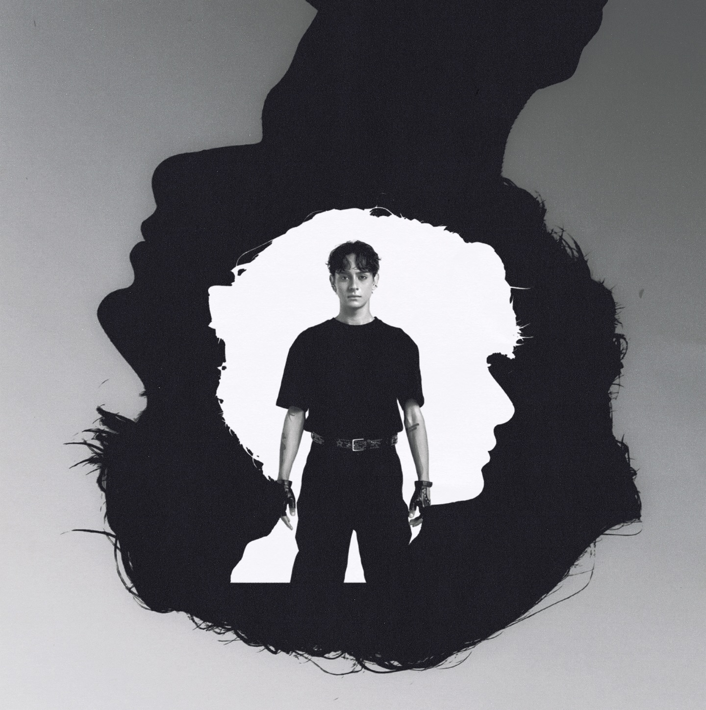

PERFORMANSLAR

▶
Benim Ol

▶
Çakkıdı

▶
Şımarık (Final)

▶
Assesment 2

▶
Beat It (Final)

▶
2 Şubat 2007’de İzmir’de doğan Arda Soydoğan, Idol House’a dans kategorisinden katılmıştır. Arda, ilk auditionda dansta Upper Intermediate, vokalde ise Intermediate seviyesine seçilmiştir. Bir aylık eğitimin ardından yapılan assessmentta dansta 20 stajyer arasından birinci, vokalde ise yedinci olarak her iki kategoride de Advance seviyesine yükselmiştir. Gruba ikinci sıradan seçilen Arda, şu anda üyeler arasında en çok takipçiye sahip isimdir.







